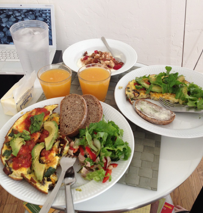
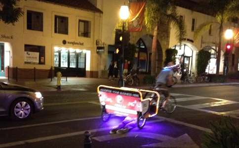

Internet ✓, wife arrived ✓, and furniture on their way ;)

Everyday life slowly creeping in.
After a couple of weeks with silence I thought it was time for another update from lovely Santa Barbara. Quite a bit has happened since last time I wrote in here. Most importantly Mette arrived safely to the States.  No significant delays, not problems with luggage, no problems at the security checks and at the visa/boarder-check. Actually the only thing that didn’t make the trip over here perfect was a 2 hour delay from San Francisco to Santa Barbara; but after all she arrived safely and we have been enjoying to be together the last several days.
No significant delays, not problems with luggage, no problems at the security checks and at the visa/boarder-check. Actually the only thing that didn’t make the trip over here perfect was a 2 hour delay from San Francisco to Santa Barbara; but after all she arrived safely and we have been enjoying to be together the last several days.
As it has been a fairly large jump for Mette we have exploited Skype heavily talking with family and friends the last couple of weeks... we have even created an account for Mette on Facebook to make the contact easier - yes Mette on Facebook:) We have also been practical in the sense that Mette now has a bank account and is covered by the health insurances. But besides that we have just enjoyed life, i.e., sleeping in in the weekends, enjoying great breakfasts (including freshly pressed juice of 50/50 sun-ripe oranges from the farmers market and grape fruit from the tree in our front yard - DAMN!), shopping, and going out for drinks and dinners. For instance we went to Arigato Sushi (the best sushi place ever ;) the other night. We had tried to go there a couple of times before but as you can’t reserve tables there and it’s pretty popular we were asked to wait for a table for around 45ish minutes which we didn’t want to - we are here for three years so have all the time in the world.  But the this friday we went there around 1830 which seems to be the perfect time to go there. We got a table and the food was excellent as the other two times I have been there. It’s seldom I go’ to the same restaurant more than once or twice - I low the variety - but when it’s that good I don’t mind.
But the this friday we went there around 1830 which seems to be the perfect time to go there. We got a table and the food was excellent as the other two times I have been there. It’s seldom I go’ to the same restaurant more than once or twice - I low the variety - but when it’s that good I don’t mind.

Besides eating and drinking (yes that is indeed my understanding of enjoying life) we have also spent some time the last couple of weeks furnishing our new place. That being said we still enjoy our dinners on the white ‘shell’ chairs at the small round table I showed you last time. The reason for that is that we have decided to order our furniture instead of picking them up ourselves. Considering we had to rent a car, spent a whole day going there, including ‘impulsive buys’  as well as the risk of sold out goods, we decided that getting it delivered is the best way to go. Hence, within the next couple of weeks we should get couch, dining table, drawer chests, coffee table, shelves, desk and desk chair from Walmart and IKEA. It’s really gonna be great to get some more storage space and be able to ‘cosy’ up our place. As we are ordering all the bigger things we aren’t getting any of the small things you always end up buying in IKEA because you din’t no you really need it. And for some reason you can’t by most of this ‘random stuff’ online. We therefore went to Ace’s Hardware store today. There we found a bunch of stuff most of which we actually knew we needed. But after all it all adds up an make this our home.
as well as the risk of sold out goods, we decided that getting it delivered is the best way to go. Hence, within the next couple of weeks we should get couch, dining table, drawer chests, coffee table, shelves, desk and desk chair from Walmart and IKEA. It’s really gonna be great to get some more storage space and be able to ‘cosy’ up our place. As we are ordering all the bigger things we aren’t getting any of the small things you always end up buying in IKEA because you din’t no you really need it. And for some reason you can’t by most of this ‘random stuff’ online. We therefore went to Ace’s Hardware store today. There we found a bunch of stuff most of which we actually knew we needed. But after all it all adds up an make this our home.
...and then it’s Halloween over here.
Those americans are really crazy about that. Yesterday when we walked to the farmers market there was a huge line waiting for the Halloween store on State street to open - c’mon man :) Well it’s actually pretty funny to walk down State street and suddenly pass a couple of mummies. One thing I don’t get though is the ‘sluttying’ up of the vast majority of the girls. After we went to Arigato’s we passed by the Halloween shop (it was not nearly as crowded as yesterday morning) just to have a look. And basically all the female custumes including some form of short skirt and a way too small bra. I have a hard time imagining firefighters, vampires, angels, football referees, layers, etc. in those outfits... but what the heck; it’s just this one time a year. And as one of my colleagues said: “Many women exploit the fact that this one time a year they can strip down and look like sluts without anyone judging them or thinking they are too much”... so be it; if they insist...
Think that was it for this time. Cheers from sunny and hot Cali’ (they say this autumn has been above average hot - well how should we now, it’s our first one here - we just enjoy being able to wear shorts in end-October ;)
/K
Sunday, 28 October 2012
